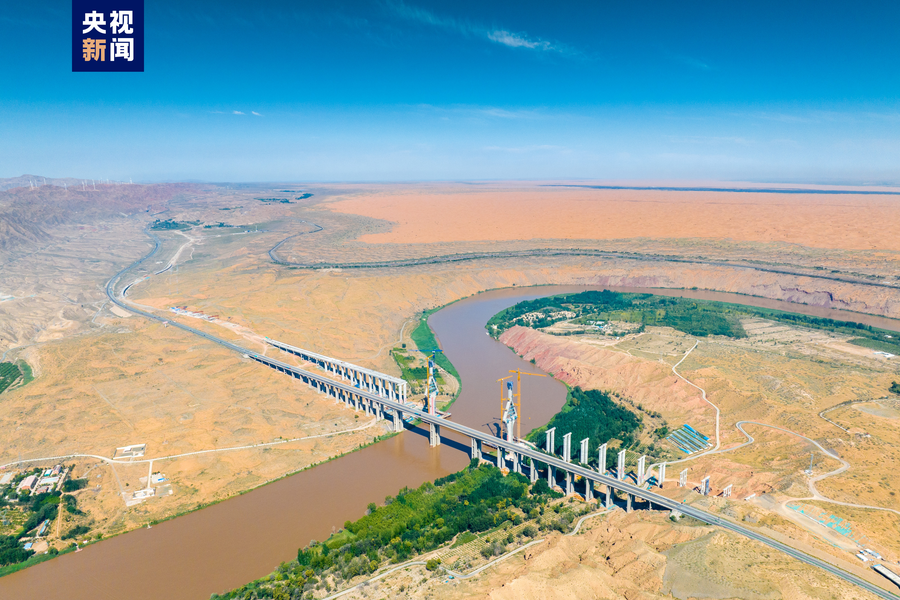
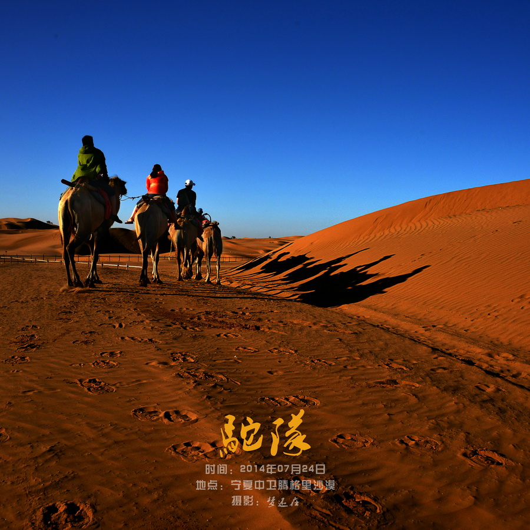
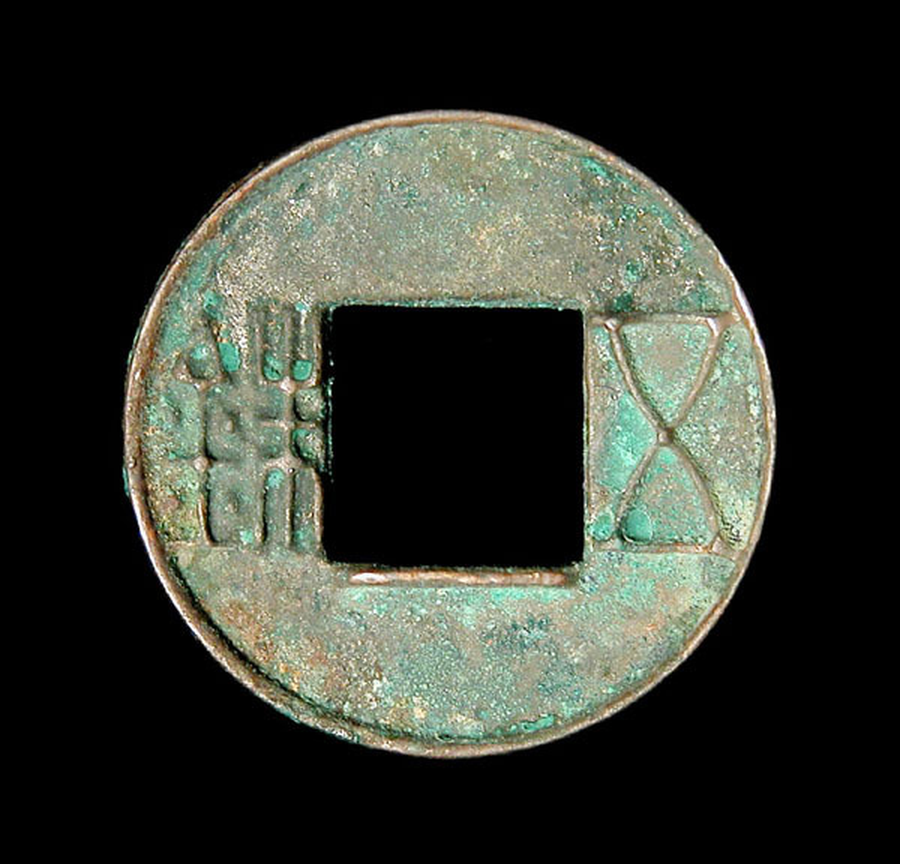
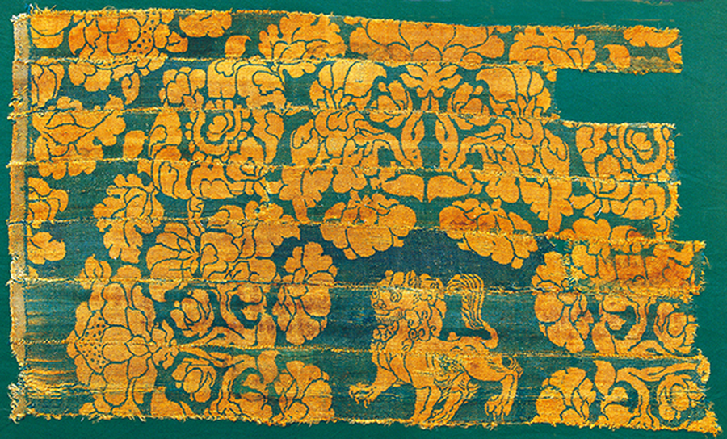
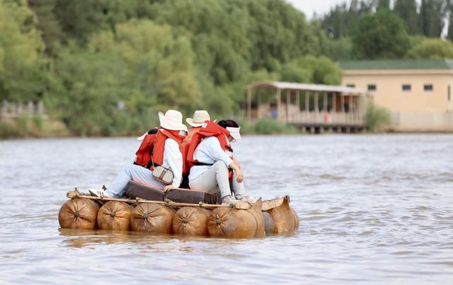
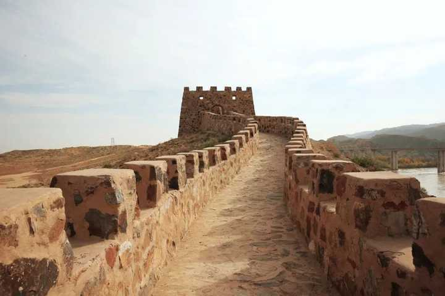

塞上江南 · 引黄沃土
黄河自黑山峡进入宁夏，中卫成为黄河入宁第一站。历代灌渠与黄河水共同滋养出稻麦飘香的宁夏平原，“天下黄河富宁夏，首富中卫”正是对这方绿洲的礼赞。
一边是腾格里沙漠的金色沙海，一边是黄河滋养的塞上绿洲。 中卫在两种地貌之间生长了千年，也因此在丝路北道上留下了 渡口、驿站、卫所与文物交织的漫长故事。
中卫地处宁夏中西部，北依腾格里沙漠，南枕香山，黄河自西南向东北穿境而过。 早在秦汉时期，先民便在这里引黄开渠、屯垦造田，将荒漠边缘的河套地带 经营成稻麦飘香的“塞上江南”。
当汉唐丝路自长安西行，经陇山古道进入宁夏平原，再由灵州、中卫 渡黄河、出凉州，中卫便成为“丝绸之路北道”上的咽喉节点： 骆驼在这里歇脚，货物在这里换乘，戍卒在这里守关。
黄河自黑山峡进入宁夏，中卫成为黄河入宁第一站。历代灌渠与黄河水共同滋养出稻麦飘香的宁夏平原，“天下黄河富宁夏，首富中卫”正是对这方绿洲的礼赞。
在桥梁稀少、木船难行的年代，整张羊皮充气扎筏、顺水漂渡，曾是黄河两岸最实用的交通方式。筏工号子与驼铃声，在中卫沿河渡口此起彼伏。
汉唐商旅由固原、灵州一路西行，在中卫渡黄河后进入河西走廊。明代设卫驻军、屯田护驿，使中卫既是商贸渡口，也是控扼大漠的军事重镇。
今日中卫市博物馆的丝路展陈，正是对这些渡口、驿道与卫所记忆的系统收藏。


汉代“凿空西域”后，丝绸之路北道自长安出发，经陇山、固原进入宁夏平原， 再经灵州、中卫渡黄河，西出凉州衔接河西走廊。中卫因此兼具渡口、驿站与 卫所三重身份：白天商旅络绎，夜里烽燧相望，农耕文明与游牧文明在黄河两岸 反复相遇、彼此塑造，最终沉淀为今日中卫深厚的历史底色。
宁夏平原引黄灌溉传统可上溯至秦汉，秦渠、汉渠等古渠遗迹见证了农耕文明在河套绿洲的扎根。
汉通西域后，使者商旅经陇山古道进入宁夏，沿黄河渡口继续西行，中卫一带渐成北道必经之地。
灵州道、回鹘路等驿道网络繁盛，钱币、织锦、陶瓷沿黄河两岸流转，渡口与驿站昼夜不息。
明代设宁夏中卫，筑城屯田、修边墙烽燧，中卫成为兼顾军防与商贸的丝路北道重镇。
中卫市博物馆与青年志愿团队以数字化、研学与创意传播，让古道记忆走向新一代。
点击卡片，展开文物背后的历史背景。钱币、织锦、羊皮筏与边塞遗存， 共同构成中卫博物馆对丝路北道的系统讲述。
中卫博物馆依托地方考古发现与征集文物，集中展示汉唐丝路、黄河渡口、 西夏瓷韵与明清边塞等主题。以下四组展品为代表性展陈方向，完整内容以馆内展签为准。

汉唐五铢钱与开元通宝在渡口、驿站遗址中屡有出土，是丝路商旅往来最直接的物证。

汉唐联珠纹、胡旋舞等异域元素经丝路传入，织锦成为东西方美学交融的珍贵样本。

黄河记忆整羊皮充气扎筏、顺流漂渡，羊皮筏子曾是黄河两岸最日常的渡河方式。

明代明代卫所、边墙与烽燧，让中卫成为丝路北道上兼具军防与商贸的枢纽。
让文物在数字空间“活”起来，让青年在讲述中成为文脉的“接棒人”。 科技是新的渡口，青春是新的驼铃。
高精度扫描与三维重建，让丝路文物跨越展柜，随时可查、可赏、可研究，也为偏远地区的青少年打开一扇云端之门。
大学生志愿讲解队走进展区与社区，用青年语态讲述文物背后的历史、情感与当代意义，让讲解成为双向的文化对话。
提取联珠纹、古渡与羊皮筏子元素，让传统纹样进入徽章、书签、数字藏品与日常设计，让文脉走进生活。
短视频导览、线上展厅与互动内容，让丝路记忆抵达更远的年轻人群，在每一次转发中完成新的讲述。
文明因交流而多彩，文脉因青年而常新。黄河奔涌不息，丝路记忆便不止于陈列，而在于每一代人的接力。
—— 中华文脉延续行动 · 丝路古道上的中卫记忆
文物不是终点，而是起点。青年学生用数字科技与社会实践， 让丝路记忆从展柜走向课堂、走向屏幕、走向每一场真实的行走。
历史如果只停留在展柜里，就只剩下“过去”；当青年用自己的语言重新讲述， 它才与当下发生关联。数字时代的青年擅长图像、声音与互动表达，能够把文物 背后的情感翻译给同龄人，让丝路记忆真正进入当代生活。
三维扫描让脆弱的织物与钱币以毫米级精度永久保存；增强现实把文物放回 它原本的渡口与驿道场景；线上展厅则打破地理边界，让偏远地区的孩子也能 走近丝路。科技不是替代文物，而是延长文物的生命，扩大文物的听众。
一次田野走访、一条口述史短视频、一份博物馆志愿讲解、一张传统纹样的 再设计草稿，都可以成为文脉的续写。真正重要的不是做多大的事，而是让 自己从“参观者”变成“参与者”。